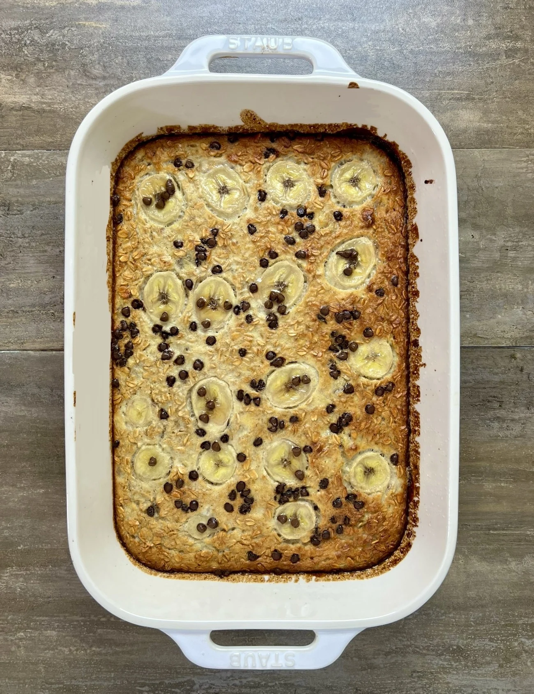

Home
Chocolate Chip Banana Bread Baked Oatmeal

Description:
Ripe bananas baked into an oatmeal and egg mixture and topped with chocolate chips for a
Chocolate Chip Banana Bread Baked Oatmeal.
Ingredients:
- 3 cups (240 g) old fashioned oats
- 2 scoops (60 g) vanilla protein powder
- 1 tsp (4 g) baking powder
- 4 medium (500 g) bananas ripe
- 2 tbsp (42 g) honey
- 1 tbsp (14 g) butter
- 10 tbsp (150 g) liquid egg whites or 2 whole eggs
- 2 cups (480 g) 2% milk
- 2 tbsp (28 g) mini chocolate chips
Steps:
- Preheat your oven to 375°F.
- In a large bowl, mix together the oats, protein powder, and baking powder.
- In a separate bowl, add 3 of the ripe bananas and mash. It may help to microwave them for a bit to soften. Cut the other banana into slices to go on top of the oatmeal.
- Whisk together the mashed banana, egg whites, honey, milk, and 1 tbsp of melted butter. Pour in the dry ingredients and 1 tbsp of the chocolate chips. Mix to combine.
- Spray a 13"x9" pan with oil and add the oat mixture. Top with the sliced banana and chocolate chips.
- Bake for 35-40 minutes.